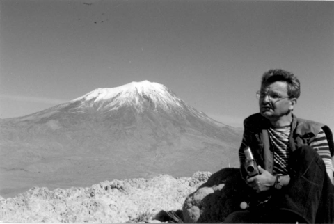

СТЕПАНАКЕРТСКИЙ МЕЧТАТЕЛЬ

- Гегам, ну, теперь-то, исходя уже из личного жизненного опыта и собственных ощущений, ответь: легко ли быть исторической личностью?
- Что это ты тут плетёшь?
- А сам посуди: ты первый редактор первой в истории Карабаха, независимой газеты. Прикидываешь, сколько копий изломают историки будущих времён, дискутируя: по каким-таким мотивам утром 2 февраля 2000 года Гегам Багдасарян одел чёрный галстук и как обернулись бы последущие хитросплетения всемирного исторического процесса, одень ты в это утро свой любимый – в полоску? А?
- Понятно. Пытаешься раздуть во мне манию величия. Чей заказ?
- Вот иди и витийствуй, после этого, с эдаким контингентом. Он тебя со второго подхода раскалывает. Ну, ладно. Ты угадал - у меня действительно задание сделать интервью с тобой.
- Так бы сразу и начинал.
- Так и начну, а для удобства читателей давай обозначим меня буквой "К" - корреспондент; а тебя "Г. Б." - Гегам Багдасарян, первый редактор первой независимой степанакертской газеты "10-я провинция".
Г. Б. - Окей.
К. - Сперва позволь изложу предыдущие факты твоей биографии, а если где-то отклонюсь, ты меня поправляй. Итак, родился ты, наверное, году в 1961?
Г. Б. - Точно.
К. - В семье потомственных интелигентов.
Г. Б. - Родители - простые учителя. Это, знаешь, очень дисциплинирует. Научаешься довольствоваться малым.
К. - Вот только лапшу мне, попрошу, не вешать. "Довольствоваться малым…" Проповедь смирения… А школу, небось, с медалью кончил? И институт с "красным" дипломом?
Г. Б. - Я был ленинским стипендиатом.
К. - А потом?
Г. Б. - Служба в Советской Армии. ДМБ - 84.
К. - Ну, дальше мне известно - газета СОВЕТСКИЙ КАРАБАХ.
Г. Б. - Да, от собкора - до члена редакционной коллегии.
К. - И вот 1991-й, провозглашение независимости Карабаха, первый Председатель Верховного Совета НКР Артур Мкртчян приглашает тебя работать руководителем пресс-службы ВС НКР. Возникает вопрос: вы с ним родственники?
Г. Б. - Нет.
К. - Ну, может, родственники родственников?
Г. Б - Тоже нет.
К. - Тогда почему именно тебя?
Г. Б. - Наверно, потому что интеллигенту легче работать с интелигентом.
К. - Ну, допустим. Что там дальше-то было?.. Нераскрытое самоубийство Артура Мкртчяна. Ещё два года войны. Прекращение военных действий. Арест Гегама Багдасаряна… Тебя один раз арестовывали?
Г. Б. - Один.
К. - Ну, да. Потом пошли аресты прочих интелигентных верховных советников. Но лавры превопроходца - твои. А тебя тогда принялись призывать в армию и отсылать на самые дальние рубежы и заставы - где на ничейной земле даже цветы не растут, а только пыльная дрянь… Два раза призывали?
Г. Б. - Когда хотели в третий раз - я уехал. Два года эмиграции и ностальгии.
К. - Но ещё и повышение квалификации - работа в крупнейшей из российских региональных газет, КАЛИНИНГРАДСКАЯ ПРАВДА. Разве не престижно?
Г. Б - Всё равно, знаешь, как трудно без Карабаха.
К. - Так ты ж сам виноват! Каково было власть предержащим терпеть тебя тут, когда ты начал где попало ратовать за 4-ю власть в Карабахе. Власть средств массовой информации на основе гласности. Сам бы подумал своей интелигентной головой: кто из дорвавшихся до власти захочет делиться ею?
Г. Б. - Тот, кто умеет ею распорядиться.
К. - Ну, это мы не проходили… И скажи спасибо, что за эту самую 4-ю власть тебе не пришили 5-ю колонну.
Г. Б. - Спасибо.
К. - Вот и умничка. А в 98-м ты вернулся в Ереван, откуда был приглашен в Степанакерт подымать из разрухи масс-медию родного Карабаха. Объективности ради надо признать, что при твоём редакторстве АЗАТ АЗЦАХ стал читабельной газетой.
Г. Б. - А меня в тот период непрестанно поучали: журналистом можешь не быть, но чиновником быть обязан.
К. - То есть пророка и борца за 4-ю власть пытались впрячь в телегу власти не того калибра?.. Но вот теперь ты сам себе голова - редактор независимой газеты. И как - получается?
Г. Б. - Нельзя сказать однозначно. Ведь что такое власть в чистом виде? Это когда люди обращаются к тебе за помощью и ты в состоянии содействовать решению их проблем. Так вот: обращений к нам - в избытке, редакционная почта переполнена, но с решением проблем - крайне туго.
К. - В чём причина?
Г. Б. - Полное отсутствия сотрудничества со стороны, как ты говоришь, "предыдущих" властей. Первая - законадательная - нас игнорирует: все наши обращения и просьбы к парламенту остаются без ответа. Вторая - правоохранительная - отнимает время: завели там 7 или 8 уголовных дел по нашим публикациям и через день вызывают журналистов на допросы, которые длятся часами. Ну, а третья - исполнительная - рьяно затирает: недавно МИД НКР открыл официальный сайт в интернете, так там наша газета даже не значилась в списке средств массовой информации Карабаха. Потом, правда, внесли - когда одна ереванская газета пристыдила.
К. - Ага! Значит, есть она все-таки: 4-я власть!
Г. Б. - Но, увы, не в нашей провинции.
К. - Ну, это как посмотреть… Вон и почта у вас полна… Выходит, какую-то долю власти вы уже смогли прибрать к рукам. Отсюда впрос: правда, будто, власть портит человека?
Г. Б. - Я бы сказал иначе: не власть портит человека, а человек - власть.
К. - Неизбежно?
Г. Б. - На что годны правила без исключений? Артур Мкртчян работал по-честному, не извращал власть в средство добычи личных выгод.
К. - Вобщем-то, тяга к власти - одно из самых естественных стремлений у людей. Человек без амбиций - духовный кастрат. Вопрос лишь в том - как достигается власть? От традиционного метода - примазаться к какому-то боссу и пить, пить и пить за его здоровье - ты, по моим наблюденияим, отказался. Пытаешься, с твоими превопроходческими замашками, сделать карьеру за счёт интеллекта. Благое начинание. Цирроз, во всяком случае, тебе не грозит. Но признайся - голова не побаливает?
Г. Б. - Что болит, так это сердце. Умом я понимал на что иду, какой начнут поливать грязью, но в реальности оказалось еще мерзопакостней… Тут один заезжий француз посочувствовал - это, говорит, нормальное явление, мы во Франции уже прошли, знаем, на следущем этапе вас обвинят в измене родине. Утешил, заграничный сукин сын! Ну, а свои всё диву даются: зачем я пошел на заведомый проигрыш? Ума не хватило разглядеть на чьей стороне сила? И невозможно объяснить, что есть не только "желудочная" шкала ценностей.
К. - Ну, а народными средствами утешаться не пробовал? Тутовкой, например?
Г. Б. - В этом смысле я - космополит. Предпочитаю русскую водку.
К. - Ну, хоть куришь-то Армтабак?
Г. Б. - Эл-энд-Эм.
К. - Вот и попробуй после этого подать тебя патриотом.
Г. Б. - По-моему, патриотизм - это состояние души, а не гастрономические…
К. - Погоди!.. А жена?
Г. Б. - Что жена?
К. - Жена у тебя - армянка?
Г. Б. - Да, конечно. И прекрасно готовит.
К. - Ну, тогда за будущее 4-й власти в 10-й провинции можно быть абсолютно спокойным. И не могу сдержаться и не выразить восхищения советской системой. Гениальнейшая была приспособа для достижения результатов диаметрально противоположных тем, на которые рассчитывали.
Г. Б. - Как это?
К. - Да со всем их воинствующим материализмом и ленинскими стипендиями - ты полюбуйся! - какого неисправимого идеалиста они из тебя отковали… И тут у меня конкретное предложение - пусть они катятся, сам знаешь куда, все эти системы, власти, целесообразности - а мы, не дожидаясь результатов парламентских выборов в НС НКР, давай дружить домами… Что скажешь?
Г. Б. - Давай.
С. Огольцов
2000\2\7